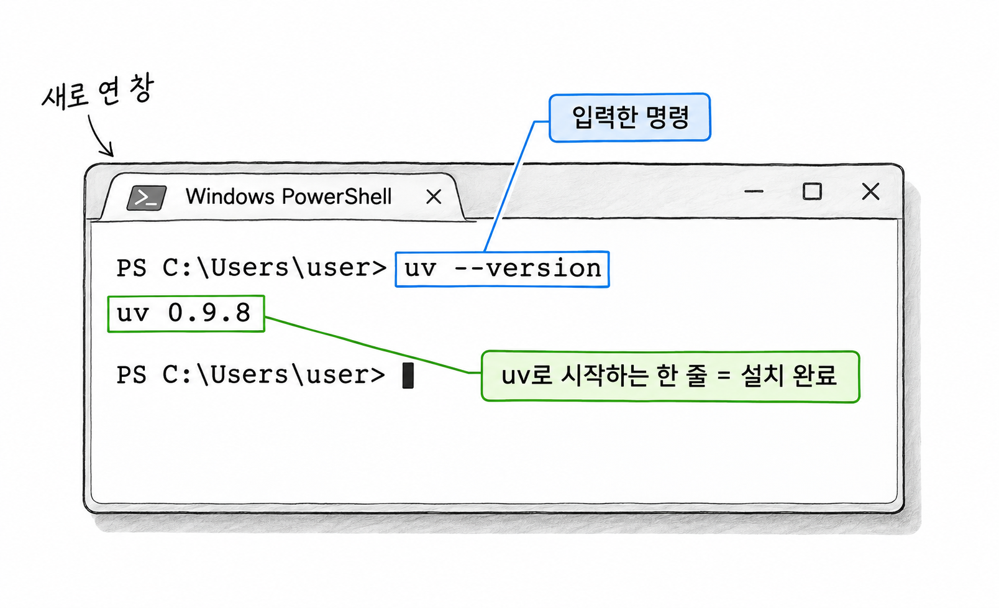
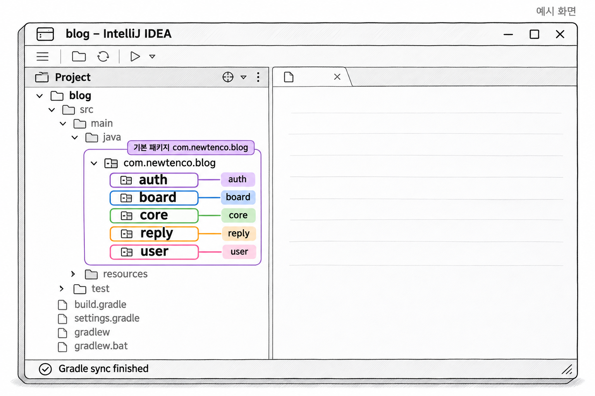
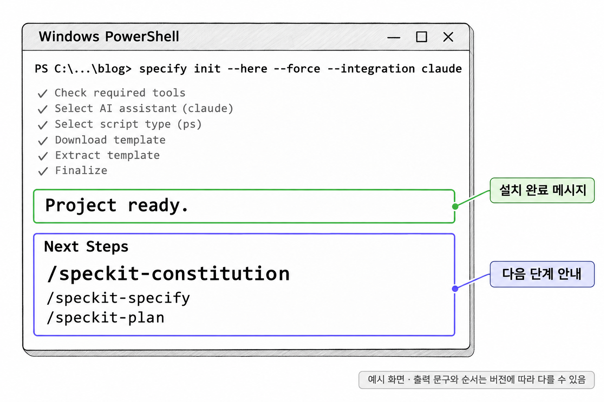
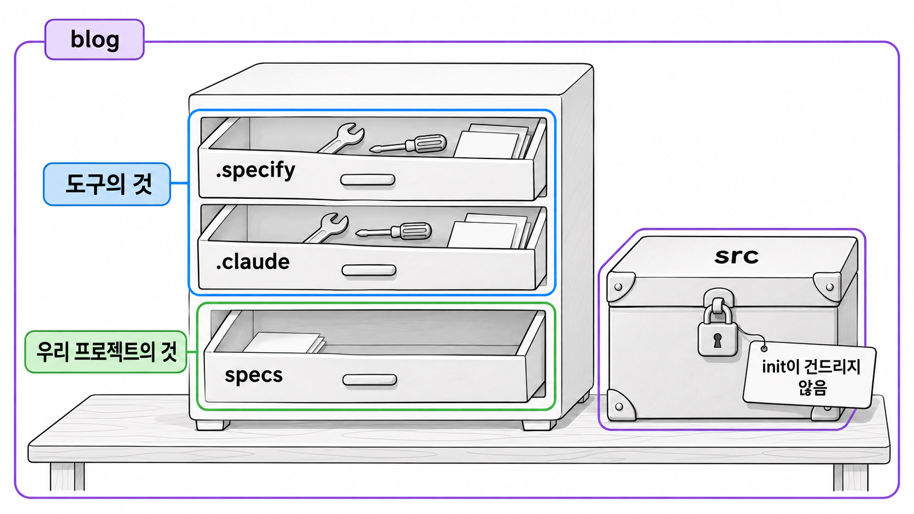
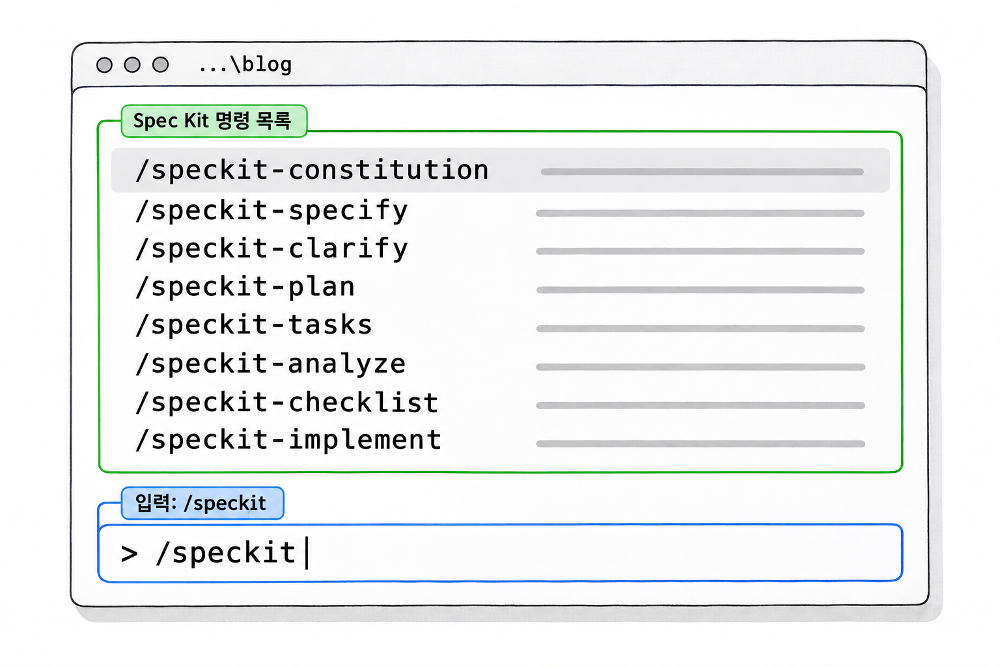

5장. Spec Kit 실행 환경
1. 준비물 확인
이 장에서 쓰는 도구는 세 가지 일을 나눠 맡습니다. Specify CLI는 Spec Kit 파일을 프로젝트에 넣습니다. Claude Code는 그 파일을 읽어 문서와 코드를 쓰고, JDK는 예제 프로젝트를 빌드하고 테스트합니다. 준비물마다 쓰이는 곳은 다음과 같습니다.
| 준비물 | 쓰는 곳 | 없으면 생기는 일 |
|---|---|---|
| Python 3.11 이상 | Specify CLI 실행 | Specify CLI를 설치할 수 없다 |
| uv | Specify CLI 설치와 관리 | uv tool install 명령을 쓸 수 없다 |
| Claude Code | Spec Kit 명령 실행, 문서와 코드 작성 | 대화창 명령을 입력할 곳이 없다 |
| JDK 21 | 블로그 API 빌드와 테스트 | .\gradlew test가 실패한다 |
| Git | 도입용 브랜치와 변경 내역 확인 | init이 바꾼 파일을 골라 볼 수 없다 |
Claude Code는 1장에서 설치하고 구독 플랜으로 로그인했으므로, 이 장에서는 나머지를 확인합니다. 이 장의 명령은 모두 PowerShell 창에 입력합니다.
1.1 Python 3.11 이상과 JDK 21
Python은 Specify CLI를 실행하는 데만 씁니다. 이 책에서 Python 코드를 작성할 일은 없습니다. 반대로 JDK 21은 Spec Kit과는 관계가 없고 예제 프로젝트에만 필요합니다. 두 도구가 이미 설치되어 있는지 버전부터 확인합니다.
예제 5-1 — Python과 JDK 버전 확인하기
파일명: 없음(PowerShell에 입력)
python --version
java -version실행 결과
Python 3.12.7
openjdk version "21.0.5" 2024-10-15 LTS
...뒷자리 숫자는 설치한 시점에 따라 다릅니다. 앞자리가 Python은 3.11 이상, Java는 21이면 됩니다.
python --version을 입력했는데 Microsoft Store 창이 열리면 Python이 설치되지 않은 것입니다. Windows에는 Python 설치를 안내하는 바로가기만 들어 있어서 이런 일이 생깁니다. 두 도구가 없거나 버전이 낮으면 Windows에 기본으로 들어 있는 패키지 관리자 winget으로 설치합니다.
코드 조각
winget install Python.Python.3.12
winget install Microsoft.OpenJDK.21설치가 끝나면 PowerShell 창을 닫고 새로 엽니다. 설치 프로그램이 바꾼 PATH는 새로 연 창에서만 적용되기 때문입니다. 그다음 버전 확인 명령을 다시 실행합니다.
IntelliJ IDEA는 터미널과 달리 자체 설정에 지정된 JDK를 씁니다. 터미널의 java -version과 IntelliJ IDEA의 Project SDK가 둘 다 21인지 확인해 두면, 터미널에서는 통과하는 테스트가 에디터에서 실패하는 일을 막을 수 있습니다.
1.2 PowerShell에서 uv 설치하기
uv는 Python 도구를 설치하고 실행하는 프로그램입니다. Java 개발자에게 익숙한 말로 하면 Python용 패키지 관리자에 가깝습니다. uv로 설치한 도구는 저마다 격리된 환경에 들어가므로, 컴퓨터에 깔린 다른 Python 프로그램과 서로 영향을 주지 않습니다.
PowerShell에 다음 명령을 입력합니다.
예제 5-2 — uv 설치하기
파일명: 없음(PowerShell에 입력)
powershell -ExecutionPolicy ByPass -c "irm https://astral.sh/uv/install.ps1 | iex"이 명령은 uv의 설치 스크립트를 내려받아(irm) 바로 실행합니다(iex). -ExecutionPolicy ByPass는 이 명령 한 번에 한해 스크립트 실행 제한을 풀어 주는 옵션입니다. 컴퓨터의 설정은 바꾸지 않습니다.
설치가 끝나면 PowerShell 창을 닫고 새로 엽니다. 새 창에서 uv가 실행되는지 확인합니다.
예제 5-3 — uv 버전 확인하기
파일명: 없음(PowerShell에 입력)
uv --version실행 결과
uv 0.9.8 (...)버전 숫자는 설치 시점에 따라 다릅니다. uv로 시작하는 한 줄이 출력되면 설치된 것입니다.

생성형 예시 · 실제 실행 안 함
1.3 PATH와 실행 정책 오류 해결하기
Windows에서 이 장을 따라 하다 보면 오류 두 가지를 자주 만납니다. 하나는 설치한 프로그램을 찾지 못하는 PATH 오류이고, 다른 하나는 PowerShell 스크립트 실행을 막는 실행 정책 오류입니다.
PATH 오류
PATH는 명령 이름만 입력해도 실행할 수 있게 Windows가 프로그램을 찾아보는 폴더 목록입니다. 설치는 끝났는데 이 목록에 설치 폴더가 없으면 다음 오류가 납니다.
uv : 'uv' 용어가 cmdlet, 함수, 스크립트 파일 또는 실행할 수 있는 프로그램 이름으로 인식되지 않습니다.Windows가 uv라는 이름의 프로그램을 PATH의 어느 폴더에서도 찾지 못했다는 뜻입니다. 대부분 PowerShell 창을 닫고 새로 열면 해결됩니다. 새 창에서도 같은 오류가 나면 uv가 설치된 폴더가 PATH에 들어갔는지 확인합니다.
코드 조각
$env:Path -split ";"출력된 목록에 C:\Users\사용자이름\.local\bin이 있어야 합니다. uv는 이 폴더에 설치되고, 2절에서 설치할 specify도 같은 폴더에 들어갑니다. 목록에 이 폴더가 없으면 다음 명령으로 추가한 뒤 PowerShell 창을 닫고 새로 엽니다.
코드 조각
uv tool update-shell실행 정책 오류
실행 정책(execution policy)은 PowerShell이 .ps1 스크립트 파일을 실행해도 되는지 정하는 Windows 설정입니다. Windows 11 가정용 PC는 기본값이 스크립트 실행을 막도록 되어 있어서 다음 오류가 날 수 있습니다.
이 시스템에서 스크립트를 실행할 수 없으므로 C:\...\create-new-feature.ps1 파일을 로드할 수 없습니다.이 오류는 지금보다 7장 이후에 더 자주 보입니다. Spec Kit의 보조 스크립트가 .ps1 파일이어서, Claude Code가 이 스크립트를 실행할 때 막히기 때문입니다. 현재 설정은 다음 명령으로 확인합니다.
코드 조각
Get-ExecutionPolicy -ListCurrentUser가 Undefined이고 LocalMachine이 Restricted이면 스크립트가 막힌 상태입니다. 현재 사용자에 한해 정책을 RemoteSigned로 바꿉니다.
코드 조각
Set-ExecutionPolicy -Scope CurrentUser RemoteSignedRemoteSigned는 내 컴퓨터에서 만든 스크립트는 실행하고, 인터넷에서 내려받은 스크립트는 서명이 있을 때만 실행하는 정책입니다. -Scope CurrentUser를 붙였으므로 관리자 권한이 필요 없고, 다른 사용자 계정에도 영향을 주지 않습니다. 회사 PC에서 그룹 정책으로 이 설정이 잠겨 있으면 바꿀 수 없으니 사내 관리자에게 문의합니다.
2. 버전을 고정한 설치
2.1 v1.3.3으로 Specify CLI 설치하기
4장에서 본 것처럼 Specify CLI는 Spec Kit 파일을 프로젝트에 넣는 명령줄 도구입니다. uv로 설치하되, 끝에 버전 태그를 붙여 v1.3.3을 설치합니다.
기본 문법
uv tool install specify-cli --from git+https://github.com/github/spec-kit.git@버전태그--from 뒤의 주소는 Spec Kit의 GitHub 저장소이고, @ 뒤의 버전 태그가 설치할 릴리스를 정합니다. 이 책에서는 v1.3.3을 씁니다.
예제 5-4 — Specify CLI v1.3.3 설치하기
파일명: 없음(PowerShell에 입력)
uv tool install specify-cli --from git+https://github.com/github/spec-kit.git@v1.3.3설치가 끝나면 PowerShell 창을 닫고 새로 연 뒤 버전을 확인합니다.
예제 5-5 — Specify CLI 버전 확인하기
파일명: 없음(PowerShell에 입력)
specify version실행 결과
출력에 1.3.3이 보이면 설치된 것입니다. 출력 형식은 버전마다 조금씩 다를 수 있습니다. [확인 필요]
specify 명령을 찾지 못한다는 오류가 나면 1.3의 PATH 오류와 같은 문제입니다. uv tool update-shell을 실행하고 PowerShell 창을 닫고 새로 엽니다.
예전에 다른 버전을 설치해 두었다면 uv tool install이 이미 설치되어 있다며 멈출 수 있습니다. 이때는 --force를 붙여 v1.3.3으로 다시 설치합니다.
코드 조각
uv tool install specify-cli --force --from git+https://github.com/github/spec-kit.git@v1.3.32.2 버전을 고정하는 이유
Spec Kit은 매우 빠르게 바뀝니다. 2026년 11월 첫 열흘 동안에만 v1.3.0부터 v1.4.0까지 다섯 번 릴리스되었습니다. 그동안 설치 경로나 옵션 이름이 바뀐 적도 여러 번 있습니다.
버전 태그 없이 설치하면 설치한 날의 최신 버전이 들어옵니다. 같은 팀에서도 월요일에 설치한 사람과 금요일에 설치한 사람의 버전이 달라질 수 있습니다. 버전이 다르면 init이 만드는 폴더와 명령 파일의 위치가 서로 어긋납니다. 그러면 한 사람의 환경에서 되던 명령이 다른 사람의 환경에는 없는 일이 생깁니다. 교재도 마찬가지여서, 버전을 고정하지 않으면 이 책의 화면과 수강생의 화면이 달라집니다.
이 책은 v1.3.3 기준이고 v1.4.0에서 달라진 점은 다루지 않습니다. 버전을 올리는 방법은 12장의 안전한 업그레이드에서 다룹니다.
3. 예제 프로젝트 준비
3.1 블로그 API 시작 코드 열기
예제 프로젝트는 강의에서 나눠 주는 블로그 API 시작 코드입니다. 회원 가입 · 로그인과 JWT 인증은 이미 만들어져 있고, 댓글 기능은 아직 없습니다. 실행 환경은 다음과 같습니다.
| 항목 | 값 |
|---|---|
| JDK | 21 |
| Spring Boot | 4.1.2 |
| 빌드 도구 | Gradle(Gradle Wrapper 포함) |
| 기본 패키지 | com.newtenco.blog |
| 에디터 | IntelliJ IDEA |
받은 압축 파일을 풀면 blog 폴더가 생깁니다. 경로에 한글이나 공백이 들어가면 일부 도구가 경로를 잘못 읽을 수 있으므로 C:\work\blog처럼 영문 경로에 둡니다. IntelliJ IDEA에서 File > Open으로 blog 폴더를 열면 Gradle 프로젝트로 인식하고 의존성을 내려받습니다.

생성형 예시 · 실제 실행 안 함
패키지마다 어떤 클래스가 있고 어떤 규칙을 지키는지는 6장에서 헌법을 쓰기 전에 자세히 봅니다. 여기서는 프로젝트가 열리는 것까지만 확인합니다.
3.2 기존 테스트 실행하기(.\gradlew test)
Spec Kit을 넣기 전에 기존 테스트가 모두 통과하는지 확인합니다. 출발점이 정상이어야 나중에 테스트가 실패했을 때 원인이 에이전트가 고친 코드에 있다고 판단할 수 있습니다.
PowerShell에서 blog 폴더로 이동한 뒤 테스트를 실행합니다.
예제 5-6 — 기존 테스트 실행하기
파일명: 없음(PowerShell에 입력)
cd C:\work\blog
.\gradlew testmacOS · Linux 자료에는 ./gradlew test로 적혀 있습니다. PowerShell에서는 현재 폴더의 프로그램을 실행할 때 앞에 .\를 붙여야 하므로, 이 책에서는 .\gradlew test로 씁니다.
실행 결과
BUILD SUCCESSFUL in 18s걸린 시간과 그 위에 출력되는 작업 줄은 컴퓨터마다 다릅니다. BUILD SUCCESSFUL이 보이면 모든 테스트가 통과한 것입니다. 시작 코드에 들어 있는 테스트는 다음 16개입니다.
| 테스트 클래스 | 개수 |
|---|---|
| AuthApiTest | 10 |
| JwtProviderTest | 4 |
| JwtUtilTest | 2 |
build\reports\tests\test\index.html을 브라우저로 열면 테스트 결과를 클래스별로 볼 수 있습니다. 이 16개는 9장에서 댓글 기능을 구현한 뒤 기존 기능이 망가지지 않았는지 확인하는 기준이 됩니다.
BUILD FAILED가 나오고 Java 버전 관련 메시지가 보이면 1.1로 돌아가 java -version이 21인지 확인합니다.
3.3 도입용 브랜치 만들기
Spec Kit을 넣기 전에 Git 브랜치를 따로 만듭니다. init이 추가하는 파일이 모두 이 브랜치의 변경 내역으로 드러나므로, 무엇이 들어왔는지 확인하고 필요하면 브랜치째 버릴 수 있습니다.
먼저 커밋하지 않은 변경이 없는지 확인합니다.
예제 5-7 — 출발점 확인하기
파일명: 없음(blog 폴더의 PowerShell에서 실행)
git status실행 결과
On branch main
nothing to commit, working tree cleannothing to commit이 보이면 출발점이 깨끗한 상태입니다. 수정된 파일이 보이면 먼저 커밋합니다. fatal: not a git repository가 나오면 받은 시작 코드에 Git 저장소가 없는 것입니다. 이때는 저장소를 만들고 첫 커밋을 남깁니다.
코드 조각
git init
git add .
git commit -m "블로그 API 시작 코드"출발점이 깨끗해지면 도입용 브랜치를 만들고 그 브랜치로 옮깁니다.
예제 5-8 — 도입용 브랜치 만들기
파일명: 없음(blog 폴더의 PowerShell에서 실행)
git switch -c speckit-setup브랜치 이름은 팀 규칙에 맞게 정해도 됩니다. 운영 중인 프로젝트에서 이 절차를 왜 지켜야 하는지는 10장에서 다시 다룹니다.
4. init으로 Spec Kit 넣기
4.1 specify init --here --force --integration claude
init은 Specify CLI가 프로젝트에 Spec Kit 파일을 넣는 명령입니다. 새 프로젝트를 만들 때와 이미 있는 프로젝트에 넣을 때 쓰는 형태가 다릅니다.
기본 문법
specify init 프로젝트이름 --integration 에이전트키
specify init --here --force --integration 에이전트키첫 번째 형태는 새 폴더를 만들고 그 안에 Spec Kit 파일을 넣습니다. 이 책의 블로그 프로젝트처럼 이미 코드가 있는 폴더에는 두 번째 형태를 씁니다. 옵션의 뜻은 다음과 같습니다.
| 옵션 | 뜻 |
|---|---|
--here | 새 폴더를 만들지 않고 현재 폴더에 설치한다 |
--force | 비어 있지 않은 폴더라는 경고를 확인하고 설치를 계속한다 |
--integration | 어떤 에이전트용으로 설치할지 정한다. Claude Code는 claude, GitHub Copilot은 copilot |
--force가 덮어쓰는 것은 Spec Kit이 관리하는 경로와 이름이 겹치는 파일뿐입니다. src 아래의 Java 코드는 건드리지 않습니다. 그래도 겹치는 파일은 교체될 수 있으므로 3.3에서 브랜치를 먼저 만든 것입니다.
blog 폴더에서 다음 명령을 실행합니다.
예제 5-9 — init으로 Spec Kit 넣기
파일명: 없음(blog 폴더의 PowerShell에서 실행)
specify init --here --force --integration claude실행 결과
설치 과정이 단계별로 출력된 뒤 완료 메시지와 다음에 할 일이 나옵니다. 다음 단계로 /speckit-constitution 같은 명령이 안내되면 설치가 끝난 것입니다. 출력 문구와 순서는 버전에 따라 다를 수 있습니다. [확인 필요]

생성형 예시 · 실제 실행 안 함
4.2 PowerShell 보조 스크립트 선택하기
4장에서 본 보조 스크립트는 기능 폴더를 만들거나 브랜치를 정리하는 반복 작업을 맡습니다. Spec Kit은 같은 일을 하는 스크립트를 운영체제별로 준비해 둡니다. Windows에서는 PowerShell 스크립트(.ps1), macOS · Linux에서는 셸 스크립트(.sh)를 씁니다.
init은 운영체제를 보고 스크립트 종류를 고르며, Windows의 기본값은 PowerShell입니다. 그래서 4.1의 명령만 실행해도 PowerShell 스크립트가 설치됩니다. 기본값에 기대지 않고 직접 정하려면 --script 옵션을 붙입니다.
코드 조각
specify init --here --force --integration claude --script psps는 PowerShell, sh는 셸 스크립트입니다. 설치 중에 스크립트 종류를 묻는 선택 화면이 나오면 ps를 고릅니다.
팀원 모두가 같은 운영체제를 쓰면 스크립트 종류는 문제가 되지 않습니다. 팀에 Windows와 macOS 사용자가 섞여 있다면 어느 스크립트를 저장소에 둘지 팀에서 정해 둬야 합니다. 이 책은 Windows · PowerShell 기준이므로 PowerShell 스크립트만 씁니다. Claude Code가 이 스크립트를 실행하다 막히면 1.3의 실행 정책을 확인합니다.
4.3 init이 바꾸는 것과 바꾸지 않는 것
init이 끝나면 Git으로 무엇이 바뀌었는지 확인합니다. 3.3에서 출발점을 깨끗하게 해 두었으므로 git status에 보이는 것은 모두 init이 만든 변경입니다.
예제 5-10 — init이 바꾼 파일 확인하기
파일명: 없음(blog 폴더의 PowerShell에서 실행)
git status실행 결과
On branch speckit-setup
Untracked files:
(use "git add <file>..." to include in what will be committed)
.claude/
.specify/
CLAUDE.md
nothing added to commit but untracked files present (use "git add" to track)새 파일만 추가되었고 수정된 파일(modified:)은 없습니다. 목록에 나오는 항목은 버전에 따라 조금 다를 수 있습니다. v1.3.3에서 CLAUDE.md를 init이 만드는지, plan 단계에서 에이전트 컨텍스트를 갱신할 때 만드는지는 확인하지 못했습니다 [확인 필요]. 그래서 CLAUDE.md는 이 목록에 없을 수도 있습니다. 다만 src나 build.gradle은 목록에 없어야 합니다.
| 바꾸는 것 | 바꾸지 않는 것 |
|---|---|
.specify 폴더 추가 | src 아래 Java 코드 |
.claude 아래 명령 파일 추가 | build.gradle 등 빌드 설정 |
에이전트 안내 파일(CLAUDE.md) 추가(만드는 시점은 [확인 필요]) | 기존 테스트 |
init은 기존 코드를 읽고 "이 프로젝트는 이렇게 동작한다"는 스펙을 만들어 주지도 않습니다. specs 폴더는 아직 비어 있거나 없습니다. 기존 규칙을 헌법에 옮기는 일은 6장에서 사람이 지시해서 합니다.
src나 build.gradle이 modified:로 보이면 init을 잘못된 폴더에서 실행했거나 겹치는 파일이 덮어쓰인 것입니다. 이때는 커밋하지 말고 git diff로 바뀐 내용을 확인한 뒤 해당 파일을 되돌립니다.
코드 조각
git restore build.gradleCLAUDE.md가 이미 있던 프로젝트라면 이 파일이 수정 목록에 나올 수 있습니다. git diff CLAUDE.md로 기존 내용이 사라졌는지 확인하고, 사라졌다면 필요한 부분을 다시 옮겨 적습니다. [확인 필요]
변경 내역을 확인했으면 커밋합니다.
예제 5-11 — init 결과 커밋하기
파일명: 없음(blog 폴더의 PowerShell에서 실행)
git add .
git commit -m "Spec Kit v1.3.3 init"마지막으로 Claude Code가 새 명령 파일을 읽게 합니다. Claude Code를 이미 실행하고 있었다면 종료하고, blog 폴더에서 다시 실행합니다.
예제 5-12 — Claude Code 다시 실행하기
파일명: 없음(blog 폴더의 PowerShell에서 실행)
claude5. 생성되는 폴더 구조
init이 끝난 블로그 프로젝트의 주요 폴더와 파일은 다음 표와 같습니다. 아래 표는 이전 버전 자료를 바탕으로 정리했으므로 v1.3.3의 세부 경로는 다를 수 있습니다. [확인 필요] 설치한 뒤 IntelliJ IDEA의 Project 창에서 직접 확인합니다. 점(.)으로 시작하는 폴더가 보이지 않으면 숨김 파일 표시를 켭니다.
| 경로(blog 폴더 기준) | 들어 있는 것 |
|---|---|
.specify/memory/constitution.md | 프로젝트 헌법 |
.specify/scripts/powershell/ | 보조 스크립트(.ps1) |
.specify/templates/ | 스펙 · 계획 · 작업 목록 양식 |
.claude/skills/ | speckit 명령 파일 |
CLAUDE.md | 에이전트 안내 파일. 만드는 시점은 4.3 참고 |
build.gradle | 기존 파일 |
src/ | 기존 코드 |
세 폴더는 주인이 다릅니다. .specify와 .claude는 Spec Kit이 만들고 관리하는 도구의 것입니다. 아직 생기지 않은 specs는 우리가 쓰는 문서가 쌓이는 프로젝트의 것입니다.

그림 5-1의 구분은 12장에서 업그레이드할 때 무엇을 덮어써도 되고 무엇을 지켜야 하는지 정하는 기준이 됩니다.
5.1 .specify — 도구의 것
.specify에는 Spec Kit의 공용 자산이 들어 있습니다. 4장에서 본 세 구성 요소 가운데 템플릿과 보조 스크립트가 여기에 있습니다.
| 폴더 | 들어 있는 것 |
|---|---|
memory | 프로젝트 헌법 constitution.md |
scripts | 보조 스크립트. Windows에서는 powershell 폴더 아래 .ps1 파일 |
templates | spec.md · plan.md · tasks.md를 만들 때 쓰는 양식 |
memory\constitution.md를 열어 보면 아직 대괄호로 된 빈칸만 있는 양식입니다. 6장에서 /speckit-constitution을 실행하면 이 파일이 블로그 프로젝트의 규칙으로 채워집니다. 이 파일은 .specify 안에 있지만 내용은 우리가 정합니다. 그래서 업그레이드할 때 따로 지켜야 합니다.
템플릿도 팀에 맞게 고칠 수 있습니다. 다만 고친 템플릿은 업그레이드 때 덮어쓰일 수 있으므로 처음에는 그대로 씁니다.
5.2 .claude — 명령 파일
.claude는 Claude Code가 읽는 설정 폴더입니다. Spec Kit은 그 아래 skills 폴더에 명령 파일을 넣습니다. speckit-constitution, speckit-specify처럼 명령마다 폴더가 하나씩 있고, 그 안의 파일에 에이전트가 따를 절차가 적혀 있습니다. 대화창에서 /speckit-specify를 입력하면 Claude Code가 이 파일을 읽고 그 절차대로 일합니다.
--integration 값이 달랐다면 이 폴더 이름도 달라집니다. GitHub Copilot용으로 설치하면 Copilot이 읽는 위치에 명령 파일이 들어갑니다. .specify는 에이전트와 관계없이 같고, 에이전트용 폴더만 바뀝니다. 4장에서 Spec Kit을 여러 에이전트에서 쓸 수 있다고 한 것이 이 구조 덕분입니다.
CLAUDE.md는 Claude Code가 대화를 시작할 때마다 읽는 안내 파일입니다. 이 파일이 init 때 생기는지 plan 때 생기는지는 4.3에서 말한 대로 [확인 필요]입니다. Spec Kit 문서가 어디 있는지 같은 정보가 적혀 있습니다.
5.3 specs — 우리 프로젝트의 것
specs 폴더는 init 직후에는 아직 없습니다. 7장에서 /speckit-specify로 첫 기능의 스펙을 만들 때 생기고, 기능마다 번호가 붙은 하위 폴더가 하나씩 만들어집니다.
| 파일 | 만드는 곳 |
|---|---|
specs/001-reply/spec.md | 7장 specify |
specs/001-reply/plan.md와 그 밖의 설계 문서 | 8장 plan |
specs/001-reply/tasks.md | 8장 tasks |
specs는 .specify와 달리 Spec Kit을 업그레이드해도 건드려지지 않는 우리의 문서입니다. 코드와 함께 커밋하고 코드처럼 리뷰합니다. 기능이 끝난 뒤 이 폴더를 어떻게 남길지는 11장에서 다룹니다.
6. 명령어 표기와 입력 위치
6.1 하이픈 · 점 · 달러 표기
같은 Spec Kit 명령이 자료마다 다르게 적혀 있습니다. 에이전트와 설치 방식에 따라 명령을 부르는 표기가 다르기 때문입니다.
| 표기 | 쓰는 곳 |
|---|---|
/speckit-specify | 스킬 방식으로 설치된 에이전트. 이 책의 표기 |
/speckit.specify | 점 표기. 공식 문서의 일부 참조 페이지와 예전 자료 |
$speckit-specify | Codex처럼 달러 기호로 스킬을 부르는 에이전트 |
인터넷의 예전 자료는 대부분 점 표기로 적혀 있습니다. 표기가 틀리면 에이전트가 명령을 찾지 못합니다. 공식 문서의 표기 설명에는 Claude Code가 따로 나와 있지 않습니다. [확인 필요] 그러니 설치 직후 실제 이름을 직접 확인하는 것이 가장 확실합니다.
Claude Code의 대화창에 /만 입력하면 사용할 수 있는 명령 목록이 나옵니다. 이어서 speckit을 입력하면 Spec Kit 명령만 남습니다.

생성형 예시 · 실제 실행 안 함
목록이 비어 있으면 Claude Code를 blog 폴더가 아닌 곳에서 실행했거나, init 뒤에 Claude Code를 다시 실행하지 않은 것입니다. 목록에 나온 이름이 이 책과 다르면 목록에 나온 이름을 씁니다.
6.2 터미널 명령과 대화창 명령
1장에서 터미널과 대화창을 구분했습니다. Spec Kit 명령도 둘로 나뉘며, 명령의 앞부분만 보면 어디에 입력할지 알 수 있습니다.
| 명령의 모양 | 입력하는 곳 | 실행하는 것 | 예 |
|---|---|---|---|
specify로 시작 | 터미널(PowerShell) | Specify CLI | specify init --here --force --integration claude |
/speckit-으로 시작 | Claude Code 대화창 | 에이전트 | /speckit-specify 블로그 글에 댓글 기능을 추가한다 |
specify로 시작하는 명령은 Specify CLI라는 프로그램이 실행합니다. 설치 · 초기화 · 업그레이드처럼 파일을 정해진 자리에 놓는 일만 하고, AI는 관여하지 않습니다. /speckit-으로 시작하는 명령은 Claude Code가 명령 파일을 읽고 실행합니다. 문서를 쓰고 코드를 고치는 일은 모두 이쪽에서 일어납니다.
입력할 곳을 바꿔 입력하면 다음과 같은 일이 생깁니다.
| 잘못 입력한 경우 | 생기는 일 |
|---|---|
/speckit-specify를 PowerShell에 입력 | PowerShell이 명령을 찾지 못해 1.3의 "인식되지 않습니다" 오류가 난다 |
specify init ...을 대화창에 입력 | 에이전트가 이 문장을 지시로 받아들여 터미널 명령을 대신 실행하려 하고, 권한 승인을 요청한다 |
두 번째 경우에 권한 승인 창이 뜨면 거절합니다. Specify CLI 명령은 사람이 터미널에서 직접 실행하고 결과를 확인하는 것이 원칙입니다. 이 책에서는 터미널 명령은 powershell 코드 블록에 적고, 대화창 명령은 /speckit-으로 시작하는 문장으로 적어 구분합니다.